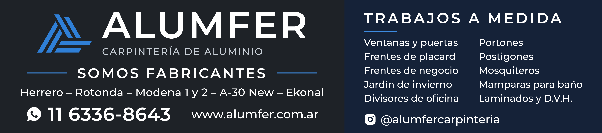

| Medida total | 540 × 120 cm (5400 × 1200 mm) · proporción 4,5 : 1 · el archivo mide exactamente eso |
| Sangrado | No incluido (el archivo es la medida total). Si lo necesitan, lo agregamos. |
| Material sugerido | Lona frontlight para exterior, tensada en bastidor |
| Archivo a imprimir | IMPRENTA_Alumfer_cartel_540x120cm_TAMANO_REAL.pdf — a tamaño real (1:1), 100 % vectorial, tipografías incrustadas: se puede ampliar o reducir sin perder calidad |
| Alternativa en imagen | IMPRENTA_Alumfer_cartel_540x120cm_TAMANO_REAL_72dpi.png — 15307 × 3402 px (540 × 120 cm a 72 dpi) |
| Color de referencia | Azul Alumfer #2F7FD6 · Fondos: grafito #121518 / #1E2227 y gris metalizado · Texto blanco puro |